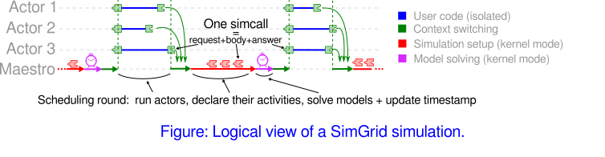
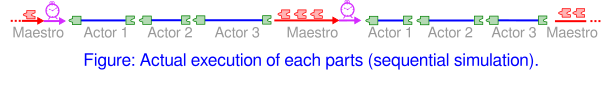
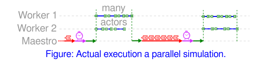

SimGrid Design Goals
A SimGrid simulation boils down to a set of actors that use resources by performing activities. SimGrid provides several kinds of resources (link, CPU, disk, and synchronization objects such as mutexes and semaphores) along with the corresponding kinds of activities (communication, execution, I/O, synchronization). SimGrid users provide a platform instantiation (sets of interconnected resources) and an application (the code executed by actors) along with the actors’ placement on the platform.
The actors (i.e., the user code) can only interact with the platform through activities, which are somewhat similar to synchronizations. Some are very natural (locking a mutex is a synchronization with the other actors that use the same mutex). Others activities implement more atypical kinds of synchronization: execution, communication, and I/O have a quantitative component that depends on the resources. Regardless, in SimGrid writing some data to disk, for instance, is seen as a synchronization with the other actors that use the same disk. When you lock a mutex, you can proceed only when that mutex gets unlocked by someone else. Similarly, when you do an I/O, you can proceed only once the disk has delivered enough performance to fulfill your demand (while competing with concurrent demands for that same disk made by other actors). Communication activities have both a qualitative component (the actual communication starts only when both the sender and receiver are ready to proceed) and a quantitative component (consuming the communication power of the link resources).
The design of SimGrid is driven by several design goals:
reproducibility: re-executing the same simulation must lead to the exact same outcome, even if it runs on another computer or operating system. When possible, this should also be true across different versions of SimGrid.
sweet spot between simulation accuracy and simulation speed: running a given simulation should be as fast as possible but predict correct performance trends (or even provide accurate predictions when correctly calibrated).
versatility: ability to simulate many kinds of distributed system and application, while remaining parsimonious so as to not hinder usability. SimGrid tries to provide sane default settings along with the possibility to augment and modify the provided models and their settings for each relevant use case.
scalability: ability to deal with very large simulations in terms of the number of actors, the size of the platform, the number of events, or all all the above.
Actors and activities
At the core of the SimGrid design lies the interactions between actors and activities. For the sake of reproducibility, the actors cannot interact directly with their environment: every interaction is serialized through a central component that processes them in a reproducible order. For the sake of speed, SimGrid is designed as an operating system: the actors issue simcalls (akin to system calls) to a simulation kernel (akin to an OS kernel) called the maestro that decides which actors can proceed and which ones must wait.
A SimGrid simulation proceeds as a sequence of scheduling rounds. At each round, all actors that are not currently blocked on a simcall get executed. This is done by the maestro, which passes the control flow to the code of each actor, written by the user in either C++, C, Fortran or Python. The control flow is returned to the maestro when the actor blocks on its next simcall. If the time it takes to execute the actor’s code is of import to the simulator, it has to be the object of execution activities. SMPI programs are automatically benchmarked, but these execution activities must be manually created if using S4U. The simulated time is discrete in SimGrid and only progresses between scheduling rounds. So all events occurring during a given scheduling round occur at the exact same simulated time, even if the actors are usually executed sequentially on a real platform.

To modify their environment actors issue either immediate simcalls that take no time in the simulation (e.g., spawning another actor), or blocking simcalls that must wait for future events (e.g., mutex locks require the mutex to be unlocked by its owner; communications wait for the network to provide have provided enough communication bandwidth to transfer the data). A given scheduling round is usually composed of several sub-scheduling rounds during which immediate simcalls are resolved. This ends when all actors are either terminated or within a blocking simcall. The simulation models are then used to compute the time at which the first pending simcall terminates. Time is advanced to that point, and a new scheduling round begins with all actors that became unblocked at that timestamp.
Context switching between the actors and maestro is highly optimized for the sake of simulation performance. SimGrid provides several implementations of this mechanism, called context factories. These implementations fall into two categories: Preemptive contexts are based on standard system threads from the libstdc library. They are usually better supported by external debuggers and profiling tools, but less efficient. The most efficient factory use a non-preemptive mechanism that is written in assembly language and hand-tuned. This is possible because a given actor is never interrupted between consecutive simcalls in SimGrid.

For the sake of performance, actors can be executed in parallel using several system threads which execute all actors in turn. In our experience, however, this rarely leads to significant performance improvement because most applications simulated with SimGrid are fine-grained: it’s often not worth simulating actors in parallel because the amount of work performed by each actor is too small. This is because the users tend to abstract away any large computations to simulate the control flow of their application efficiently. In addition, parallel simulation puts restrictions on the user’s code. For example, the existing SMPI implementation cannot be used in parallel yet.

Parsimonious model versatility
Another main design goal of SimGrid is parsimonious versatility in modeling, that is, aiming to simulate very different things using the same simulation abstractions. To achieve this goal, the SimGrid implementation tends to unify all resource kinds and activity kinds. For instance, the classical notion of computational power is mirrored for communication power and I/O power. Asynchronous executions are less common than the asynchronous communications that proliferate in MPI but they are still provided for sake of symmetry: they even prove useful to simulate thread pools efficiently. SimGrid also provides asynchronous mutex locks for symmetry. The notion of pstate was introduced to model the step-wise variation of computational speed depending on the DVFS, and was reused to model the bootup and shutdown phases of a CPU: the computational speed is 0 at these specific pstates. This pstate notion was extended to represent the fact that the bandwidth provided by a wifi link to a given station depends on its signal-noise ratio (SNR). In summary, simulation abstractions are re-used and/or generalized as much as possible to serve a wide range of purposes.
Furthermore, all provided resource models are very similar internally. They rely on linear inequation systems, stating for example that the sum of the computational power received by all computation activities located on a given CPU cannot exceed the computational power provided by this CPU. This extends nicely to multi-resources activities such as communications that use several links, and also to parallel tasks (abstract activities representing a parallel execution kernel that consumes both the communication and computational power of a set of machines) or fluid I/O streams (abstract activities representing a data stream from disk to disk through the network). Specific coefficients are added to the linear system to mimic how the resources behavior in the real world. The resulting system is then solved using a max-min objective function that maximizes the minimum of all shares allocated to activities. Our experience shows that this approach can successfully be used for fast yet accurate simulations of complex phenomena, provided that the model’s coefficients and constants are carefully calibrated, i.e. tailored and instantiated to that phenomenon.
Model-checking
Even if it was not in its original goals, SimGrid now integrates a full-featured model-checker (dubbed MC or Mc SimGrid) that can exhaustively explore all execution paths that the application could experience. Conceptually, Mc SimGrid is built upon the ideas presented previously. Instead of using the resource models to compute the order of simcall terminations, it explores every order that is causally possible. In a simulation entailing only three concurrent events (i.e., simcalls) A, B, and C, it will first explore the scenario where the activities order is ABC, then ACB, then BAC, then BCA, then CAB and finally CBA. Of course, the number of scenarios to explore grows exponentially with the number of simcalls in the simulation. Mc SimGrid leverages reduction techniques to avoid re-exploring redundant traces.
In practice, Mc SimGrid can be used to verify classical safety and liveness properties, but also communication determinism, a property that allows more efficient solutions toward fault-tolerance. It can alleviate the state space explosion problem through Dynamic Partial Ordering Reduction (DPOR) and state equality.
Mc SimGrid is more experimental than other parts of SimGrid, such as SMPI that can now be used to run many full-featured MPI codes out of the box, but it’s constantly improving.